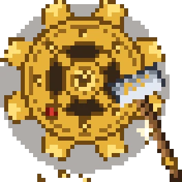

From the titans that end acts to the smallest hook and line - all of them, explained.

The names that end careers.
Four cataclysms wearing crowns: a lich in the ice, a bloom in the deep, a pillar in the void, a fist in the fire.
Adds four spectacular arena bosses with bullet-hell mechanics: the Night Lich haunting frozen catacombs, the Void Blossom slumbering in a vast cavern underground, the Obsidilith rising on the End's outer islands, and the Gauntlet menacing the depths of the Nether. Each is reached through its own structure, telegraphs its attacks like a proper soulslike duel, and guards unique drops. Bring mobility, ranged options and patience.
CurseForgeFive thrones, five dungeons, five deaths waiting to be earned.
Adds five souls-like bosses, each ruling its own dedicated dungeon generated in the world. Expect telegraphed movesets, punishing arenas and proper duels in the spirit of Epic Fight: find the dungeon, carve through it, and claim the boss at its heart. Part of the backbone of Inferium's fifty-plus boss roster.
CurseForgeWhen a god-beast wakes, the world holds its breath -- and so will you.
Adds one-time cinematic intro cutscenes to L_Ender's Cataclysm bosses: Ignis, the Ancient Remnant, the Leviathan, Maledictus and Scylla. The first time you rouse one in its dungeon, the camera takes over while you are kept invulnerable and untargetable, then the fight begins. Pure spectacle that makes Inferium's flagship duels land even harder.
CurseForgeThe dragon you studied for is gone. Three heads now watch the pillars.
Rebuilds the Ender Dragon fight into a far deadlier duel: the dragon gains three heads and four new attacks, including rapid purple-fire barrages, a snatch that carries you above the podium and drops you, a drilling crash dive, and egg bombs that hatch hostile dragon whelps. Perching becomes predictable (every five strafes), so learn the rhythm, and destroy the End crystals to weaken its charge attacks. Come prepared: this is a true Inferium boss, not the vanilla pushover.
CurseForgeSparta remembers. Its vengeance stands colossal and swings a war hammer.
Adds Leonidas, a colossal construct born from the vengeful spirits of Sparta, a fitting nightmare for those walking the Greek path. Use The Lost Helmet to reach the Rockwind Ruins arena and summon him there; he fights with crushing war-hammer arcs in full Epic Fight animation. Victory earns The Bottomless Pouch, which outside the ruins trades 20% of your max health for random treasure.
CurseForgeIt learns. Every element you throw at it becomes part of what kills you.
Adds Wraithon, a five-form adaptive boss fought in its own 500x500 arena, the Wraithium Battlegrounds. Its Adaptation Gauge absorbs elemental damage to trigger transformations, and its body parts can be broken mid-fight to open weaknesses, across 16 distinct attack animations with precise hitboxes. One of the most technical Epic Fight duels in the pack.
CurseForgeThe Dragon's Awakening is not a metaphor. They nest in the hills, and they are hungry.
The pack's namesake threat: fire, ice and lightning dragons roost across the world, growing with age into city-burning tyrants. Slay them to harvest scales, bones and blood for dragonscale and dragonsteel gear, or steal an egg and raise a dragon of your own to ride. The mod also adds sea serpents, hippogryphs, cyclopes and other mythic beasts, turning the wilderness itself into a bestiary of legends.
CurseForgeAncient horrors stir beneath sand, soul-fire and drowned stone — the mightiest trials Inferium will ever ask of you.
The backbone of Inferium's late-game boss roster: colossal dungeons scattered across every dimension, each guarding an apex boss — the Netherite Monstrosity, Ignis, the Ender Guardian, The Harbinger, The Leviathan, the Ancient Remnant and more. Explore the world (and the Codex) to locate their lairs, fight through the dungeon, then face the boss in a multi-phase duel that rewards mastery of Epic Fight's dodges and guards. Victory grants some of the strongest relics in the pack, such as the Infernal Forge and the Gauntlet of Guard. Do not walk in under-geared: these fights are act-capstone material.
CurseForgeAncient guardians with rites of their own — kneel before the Sun Chief, or take his crown by force.
Adds a set of masterfully animated mini-bosses and creatures, each an encounter with its own rules: the Ferrous Wroughtnaut waiting motionless in its cave, Barako the Sun Chief enthroned amid his Umvuthana followers, the Frostmaw hoarding its Ice Crystal, the jungle Naga, the elusive Grottol and more. Each drops a unique relic — like the Axe of a Thousand Metals, the Sol Visage or the Ice Crystal — with genuinely distinct powers. Learn each boss's mechanics; brute force alone rarely works, which fits Inferium's soulslike combat perfectly.
CurseForgeArenas of the Tree of Life scar the land — study your enemy, ring the summons, and prove yourself worthy.
Adds a roster of arena bosses — including Chesed and Malkuth — each with its own attack patterns, unique mechanics and drops. Their arenas generate naturally in the world (the Eye of Chesed item helps you locate one); inside, right-click the boss spawner to open a GUI that describes the boss's attacks in detail, then hit summon when you are ready. Arenas reset after victory, so you can return to refight bosses for more drops or simply to master the duel. Among the most mechanically demanding fights in the pack — read the spawner's briefing before you ring the bell.
CurseForgeSteel, stamina and the art of not dying.
When the sun sets over Inferium, the true owners of the night crawl out to reclaim it.
Unleashes a legion of nightmare creatures -- restless dead, sinister pumpkin fiends, spirits and worse -- that make nights, dark places and their grim structures genuinely lethal. Many of them drop unique weapons, tools and trinkets, so standing your ground pays. Fortify early, carry light, and never assume a night is safe.
CurseForgeForget clicking. Here, every swing is a commitment and every dodge a decision.
The soul of Inferium's soulslike combat: weapon-specific movesets with combos, dodges, guards, staggers and a stamina bar, all in full-body animation. Press R to switch between combat mode and vanilla mining mode; every weapon class, from greatsword to spear to katana, plays differently, and skill books unlock new dodges and weapon arts as you progress. Master spacing and stamina, or the pack's 50+ bosses will teach you the hard way.
CurseForgeWhy choose between the blade and the arcane when you can be both?
Bridges Epic Fight and Iron's Spellbooks with eleven spellsword skills: Magic Blade weaves your selected spell into weapon swings, Rapid Chant accelerates casting, Blood into Mana and Mana Shield trade health and mana for one another, and Second Wind burns all remaining mana to cheat death. Equip them like any other Epic Fight skill to build a true battle-mage. The definitive toolkit for hybrid builds in Inferium.
CurseForgeCasting mid-duel should look like it belongs there.
A compatibility layer that gives Iron's Spellbooks spells proper full-body casting animations inside Epic Fight's battle stance, so spellcasting flows with your dodges and combos instead of breaking the choreography. Works automatically whenever you cast in combat mode.
CurseForgeThe fallen fall like they mean it.
Connects Epic Fight with Physics Mod so slain enemies collapse into physics-driven ragdolls instead of the vanilla death flop. Client-side and automatic; specific entities can be blacklisted in its config.
CurseForgeTwenty-eight legendary beasts prowl the wilds — each one a hunt worthy of song.
Adds 28 legendary creatures to the world, from forest Tree Ents to Piglin Executioners, each with its own look and fighting style. Track them down across the biomes and slay them for unique loot — they slot naturally into Inferium's hunt-and-reward loop between the pack's larger boss encounters.
CurseForgeThe Norse dead do not rest — they muster, and their Overlord is calling them to war.
Adds a full undead Norse host: draugr infantry, archers, spell-slinging wights and scourges, hulking skeleton warriors, and severed skulls that regrow into fresh warriors if you leave them twitching. They garrison four new structures — mountain bastions, rare underground crypts, forts and towers — packed with loot. Slay twelve draugr to charge an Awakening Soul Gem, then use it on the surface to trigger a full invasion: escalating waves crowned by a Draugr Overlord boss fight. Rewards include spell staves, Golden Claw fragments and endgame treasure, with independent loot rolls for every player in multiplayer.
CurseForgeA patient sparring partner who never complains, no matter the punishment.
Adds a craftable target dummy: place it down, hit it with any weapon or spell, and it displays exact damage numbers so you can measure your build. Perfect for tuning Epic Fight combos, spell loadouts and skill tree choices before committing to a real boss. Hit it while sneaking to pack it back up.
CurseForgeThe oceans of Inferium keep older gods than the shore remembers — and the Kraken is hungry.
Populates the seas with six mythological creatures: the Leviathan of the cold oceans, the deep-dwelling Kraken with its life-draining grip, the coastal Bake Kujira, the swamp Bunyip, the warm-water Abaia, and the tameable Hippocampus you can ride across the waves. Slaying them yields powerful gear — the Heart of Leviathan for temporary max health, the Kraken's Tentacle for +3 reach, dual-wield Bunyip fangs, undead-camouflage bone armor and more. Sail prepared: the Kraken and Leviathan are boss-grade threats, not fishing trips.
CurseForgeLoot-laden convoys crawl across the wilds under guard — every caravan a moving heist waiting for a blade bold enough.
Roaming pillager caravans now travel the world: pack animals hauling biome-themed cargo (exotic jungle goods, desert supplies, snowy provisions) escorted by pillagers, vindicators and — at higher tiers — ravagers. Spot one on the road, gauge its escort, and ambush it: each pack animal carries its own loot. Caravans spawn on a cooldown system, with major convoys rarer than minor ones, so a big caravan sighting is always worth the fight.
CurseForgeDeath is not the end while an ally still stands — hold the line, and they will drag you back from the brink.
In multiplayer, running out of health downs you instead of killing you: you collapse, bleeding out on a timer, and a teammate can rush over and revive you before it expires. This transforms group boss fights and faction battles into genuine co-op — protect your downed allies, and pick your revive moments carefully mid-fight. If no one can reach you (or you are playing alone), you can give up and die normally.
CurseForgeSails on the horizon are never good news — pirate ships that truly sail, and truly fire back.
Physically simulated pirate ships, powered by Valkyrien Skies, roam the seas crewed and armed with working cannons that will open fire on you. Strike down the cannoneers and the helmsman to silence a vessel, then board it and plunder its cargo. Build your own artillery — place a Cannon Activator Block behind a Dispenser — and answer broadside with broadside.
CurseForgeRead your enemy's pain — wounds bloom across their bodies as their life ebbs away.
A client-side mod that visibly damages mobs as their health drops, across five escalating tiers of wounds. Different weapons leave different marks — slashes from swords, punctures from tridents — so you can gauge how close a foe is to death at a glance, no health bar needed. Works on most vanilla and modded creatures, with extensive configuration.
CurseForgeEleven impossible weapons, each with a soul of its own — miracles forged for masters of the dance of battle.
An Epic Fight arsenal expansion: 11 exotic weapons — Agony, Satsujin, Moonless, the EnderBlaster and more — each with unique animations and behaviors, plus 27 combat skills spanning guards, dodges, passives, and identities that drop from mobs according to their type. Artefact armor sets trade damage reduction for raw extra health at zero weight, and the Lupus Aureum, a giant golden wolf, can be tamed to fight at your side. Pure fuel for the pack's soulslike combat.
CurseForgeThe powers of the Cataclysm, turned against their masters — wield boss-born weapons with movesets to match.
The bridge between L_Ender's Cataclysm and Epic Fight: weapons tied to the pack's greatest bosses — Ceraunus, the Tidal Claws, the gauntlets, the Zweiender and more — gain full custom movesets, skills, and skill books. Built on the Weapons of Miracles framework, it turns every major boss trophy into a true soulslike armament instead of a stat stick.
CurseForgePower for those who read the fine print.
No battlemage of the nine schools should walk into the dark alone.
An Iron's Spells 'n Spellbooks addon that scatters tameable magical familiars across the world: tame one with Arcane Essence and it fights at your side, casting spells from its favored school. Each of the ten-plus familiars has its own specialty -- necromancers convert skeletons, illusionists cloak you, druids speed up growth -- and its own preferred healing items. Pick one that complements your school of magic.
CurseForgeWhere spellbooks end, the cauldron begins -- and every world guards its own secret pharmacopoeia.
Inferium's alchemy pillar: hundreds of ingredients carry hidden alchemical properties that are randomized by your world seed, so no wiki can hand you the answers -- experiment, catalogue what you learn, and brew custom elixirs far stronger than vanilla potions. Brewing follows familiar potion-making rules, with in-game hints guiding you from your first infusion to signature concoctions you can record in a shareable recipe book. An alchemist who keeps notes is an alchemist who survives.
CurseForgeMagic is not memorized in this school -- it is written, glyph by glyph, in your own hand.
A full spellcrafting system running parallel to Iron's Spellbooks: combine glyphs (forms, effects, augments) in a spellbook to design your own spells, powered by Source. Start with the Worn Notebook, unlock new glyphs at the Scribe's Table, craft magical gear with the Enchanting Apparatus, and grow into rituals, summonable helpers and magical automation. Where Iron's teaches fixed schools, Ars Nouveau lets you engineer the exact spell you wish existed.
CurseForgeNine schools of ruin, from holy fire to eldritch whispers. Pick your poison and learn to pronounce it.
Inferium's primary magic system: hunt spell scrolls in the world and inscribe them into spellbooks at the Inscription Table, across nine schools of magic including Fire, Ice, Lightning, Holy, Ender, Blood, Evocation, Nature and Eldritch. Progress from novice rags to legendary regalia by upgrading your casting gear and facing the mod's own spellcasting bosses, while mana, cooldowns and cast animations turn every fight into a resource dance. Combined with the Epic Fight compat mods, it powers full battle-mage builds.
CurseForgeWhen the Storm rewinds the sky and the rain falls upward, only an Arcanist can stand in the current of time.
A timeline-bending event mod: the Storm rolls in across three escalating phases with reversed rain and intensifying lightning — endure it with protective items like the Equilibrium Umbrella or the Hofmann Knot. Surviving Storm damage levels your Arcanist rank and unlocks your personal Aura (press R) for buffs like speed, regeneration, and enhanced jumping; rare aura colors carry dramatic trade-offs, such as Crimson's double damage dealt and taken. Place the Timekeeper Suitcase to claim a private island dimension and manage it from a Computer Suitcase terminal, and let the Tome of the Eon guide your progress. NPCs like Vertin and Sonetto offer trade and record-keeping along the way.
CurseForgeReasons to leave the base at night.
Fortune drifts on the wind -- if your aim is true enough to bring it down.
Treasure balloons occasionally appear in the open sky above you. Shoot one down with a real ranged weapon (snowballs and eggs won't cut it) and it drops a loot chest: common balloons carry starting materials, rarer ones hold better goods and even enchanted books. Act fast -- balloons drift away if ignored, and a dropped chest vanishes after about ten minutes.
CurseForgeFrom grizzly bears to void worms, the wilds of Inferium teem with life that bites back.
Nearly ninety new creatures -- real, prehistoric and fantastical -- populate every dimension, from grizzly bears and crocodiles to cave centipedes and void-dwelling horrors. Most yield unique items and gear with genuinely useful abilities, so hunting, taming and studying the fauna is a progression path of its own.
CurseForgeChampions of another wilderness have wandered into this one.
Brings creatures, structures and items inspired by Breath of the Wild into the world: you may stumble upon a Stone Talus rumbling to life, or cross paths with the travelling merchant Beedle. Its monsters guard worthwhile drops and blend into normal exploration rather than forming a separate questline. Still in beta, so its roster keeps growing.
CurseForgeKnow your creeper before it knows you.
Replaces the vanilla creeper with over a dozen biome-native variants -- mossy jungle stalkers, frosted mountain lurkers, parched desert crawlers -- each with bespoke models, animations and sounds, and some with their own quirks of behavior. They still explode; they just do it with style. Read the silhouette before it hisses.
CurseForgeAn abandoned Orthodox church rots deep in the birch woods, its altar still wet with the memory of a bloody rite.
A rare dungeon structure generating in birch forests: a grand domed church left derelict after a mysterious massacre, now guarded by hostile forces. Fight your way past the defenders to the cobweb-and-bone altar to claim the treasures hidden inside. The mod also adds a set of horror-twisted Orthodox paintings that make grim trophies for any stronghold.
CurseForgeBeneath a ragged surface camp, the orcs have dug too deep, and something at the bottom holds court over the dark.
A multi-level underground dungeon: a small orc camp on the surface descends through dark mines, parkour drops, lava chasms and hanging orc dens down to a final arena. Block breaking and placing are forbidden inside, so you must fight through the orc and goblin defenders with skill alone, a proper trial for anyone testing their standing with the Orcish clans. The orc warboss at the bottom guards unique orcish weapons, armor and rare loot.
CurseForgeThe heroes of the old North do not sleep quietly; their barrow doors stand open, and the dead keep their oaths still.
A Skyrim-style Nordic tomb dungeon: gloomy interconnected halls, a spider's lair, dusty altars and a boss arena at the deepest point, all guarded by draugr-like undead. Blocks cannot be broken or placed inside, so you clear it with blade and spell alone, fitting preparation for anyone courting the Norse family's favor. The tomb's final boss offers a fair but demanding duel over the treasures of the ancients.
CurseForgeA hundred doors, each hiding a fair death.
Seeds the world with hand-built challenge dungeons of varying sizes and themes, many capped by a boss fight, all designed to be hard but fair. Expect gauntlets of hostile mobs, tight arenas and loot worth the bruises. If a structure looks suspiciously deliberate, it is probably one of these; go in stocked.
CurseForgeSome doors only open on the dungeon's terms.
The framework behind Inferium's sealed dungeon experiences: it turns structures into rule-driven dungeons where block breaking and placing are forbidden, so encounters must be beaten as designed rather than tunneled around. Dungeons like Orcish Depths rely on it, and its portal dungeons can be joined with friends and re-run after a cooldown. You will mostly notice it as the invisible hand that stops you digging past a boss.
CurseForgeNail your fortress to a hull and take the war to the water.
Built on Valkyrien Skies physics, Eureka lets you build a ship out of ordinary blocks, place a Ship Helm and assemble it into a real vessel that rolls, drifts and cuts through waves. Steer from the helm, and add balloons for lift if you fancy an airship. Any structure you can build, you can sail, turning voyages between Inferium's continents into expeditions in their own right.
CurseForgeThe illagers built a colosseum. Guess who's the entertainment.
A large arena complex generating in deserts: a central battleground ringed by spectator stands, preparation rooms, barracks, a blacksmith and the Illusioner's private chamber. Fight through Pillagers, Vindicators, Evokers and the resident Illusioner to free captured Villagers and Allays and plunder the arena's treasure, the best of it hidden in the Illusioner's room.
CurseForgeThe ancients left their roads standing open. Few dare use them.
Scatters 25 biome-styled ancient gateway structures across the Overworld: uncraftable fast-travel portals that link to one another, found only through exploration. Step through to cross vast distances with no menus or GUIs breaking the immersion. A lifesaver on Inferium's enormous map once you have marked a few with JourneyMap waypoints.
CurseForgeEvery chest in every ruin now whispers of the whole world's arsenal.
Silently injects loot from across the pack's mods into structure chests, so dungeon rewards stay relevant to Inferium's progression instead of serving plain vanilla scraps. You never interact with it directly — you just find better, more varied treasure wherever you delve. Its companion addon modules (listed separately) extend this coverage to specific structure mods.
CurseForgeNo ruin left barren — these halls now pay their plunder too.
Addon module for Loot Integrations that wires modded loot into ATi Structures, Epic Structures villages and witch huts. Fully automatic: chests in these structures simply yield pack-appropriate treasure.
CurseForgeEven the strongholds of chaos hoard treasures worth bleeding for.
Addon module that injects the pack's modded loot into Born in Chaos structures. Automatic — just loot the chests.
CurseForgeDragon hoards, enriched — as a dragon's hoard should be.
Addon module that seeds modded loot into Ice and Fire structures such as dragon lairs and roosts. Automatic — the hoards you raid simply carry richer spoils.
CurseForgeThe deepest vaults of the Integrated ruins finally yield their due.
Addon module that extends Loot Integrations coverage to Integrated Dungeons, Integrated Villages, Integrated Strongholds and related structures. Automatic loot enrichment, nothing to configure.
CurseForgeThe Cataclysm's dungeons now guard more than their bosses' relics.
Addon module that enriches the chest loot inside L_Ender's Cataclysm dungeons with items from across the pack. Automatic — an extra reason to sweep every corridor before the boss room.
CurseForgeMedieval halls from the Overworld to the End, stocked for true adventurers.
Addon module that wires modded loot into the Medieval Buildings structure family, including its End and Nether editions. Automatic loot enrichment.
CurseForgeVanilla chests, reforged by the same unseen hand.
Compatibility module that lets Loot Integrations reach vanilla and randomized loot tables as well, so even ordinary dungeons and mineshafts fit the pack's reward curve. Automatic.
CurseForgeWhen dungeons arise, so do their treasures.
Addon module that injects pack loot into When Dungeons Arise's massive structures and companion mods. Automatic — those sprawling fortresses are now worth clearing to the last room.
CurseForgeThe dungeon rewards each hero in kind — no blade need be drawn over a chest.
Every naturally generated loot chest is instanced per player: you and your allies each get your own independent roll from the same chest, marked by its distinctive Lootr texture. On the server this means no more racing companions to the treasure room — everyone who makes the journey gets paid. Just open chests normally; the mod handles the rest.
CurseForgeA cursed island of chained prisons awaits beyond the portal — and the Concierge does not forgive intruders.
A full Dead Cells crossover dimension: step through a Mine Cells portal found in overworld ruins to reach the Prisoners' Quarters and fight your way through interconnected zones like the Promenade of the Condemned. Two faithful bosses guard the depths — Conjunctivius, the chained eye horror, and the Concierge — and the dimension's enemies and chests yield Dead Cells weapons and gear. Treat it as a self-contained soulslike gauntlet within Inferium: tight corridors, punishing elites, and loot worth every death.
CurseForgeLeap from the peak, open your wings, and let the winds of Inferium carry you into legend.
Adds a craftable paraglider and a Breath of the Wild-style stamina system. Hold the paraglider and jump from any height to glide safely across chasms and mountain ranges — perfect for the pack's dramatic terrain — while your stamina wheel drains, so plan your flights. Collect Spirit Orbs from dungeon loot and offer them at Goddess Statues to permanently expand your health or stamina vessels. Press Ctrl+P to open the paraglider settings.
CurseForgeThe Dragon's Awakening is not just a title — bind one of these ancient wings to your will and the horizon is yours.
Adds fully animated dragons that can be tamed and ridden as true companions — fitting allies in a pack named for their awakening. Earn a dragon's loyalty, then travel and fight with it at your side; their stats and behaviors are configurable, so encounters stay within Inferium's balance. No sprawling grind is required: these dragons are built to be found, tamed, and unleashed.
CurseForgeThe ocean was never empty — it was waiting. Eighty new reasons to fear deep water.
Fills the seas with over 80 creatures, from harmless jellyfish to block-crushing leviathans like the Megalodon, the Mosasaur, and the colossal Bloop. Deep water in Inferium is now genuinely dangerous: some horrors hunt with sonar blasts, venom, or sheer overwhelming size. Craft a Leviathan Sensor to detect giants at range, or an Echoshell to scan nearby water mobs before you commit to the dive.
CurseForgeThe tide brings new life — and new teeth.
Enriches oceans and rivers with new creatures, blocks, and mechanics in faithful vanilla style: beware the Thrasher, a sonar-hunting predator whose drops feed into trident crafting, and explore new coral varieties, ocean ravines, and jelly torches. Together with Thalassophobia, it makes Inferium's waters as alive as its lands.
CurseForgeAll roads remember — pave your empire's highways and let the miles fall away.
Fast travel you must earn with infrastructure: physically build a road between two places, map it out with the mod's chart item, and link signs at each end. Once a completed path connects them, the linked signs teleport you instantly between destinations — Supplementaries sign posts work too. No road, no shortcut: the empire grows one paved mile at a time.
CurseForgeStone remembers where you have been — bind the waystones and stitch the realm together.
Right-click a waystone to attune to it, then teleport between any you have discovered — the backbone of fast travel across Inferium's vast and dangerous map. You will find them scattered through the world, including atop Towers of the Wild, and warp scrolls and stones let you jump back to your network from the field.
CurseForgeHook on and let go of the ground — ride the lines strung across the world.
Turns compatible cables and lines from other mods into rideable ziplines, Satisfactory-style. Aim at a line while holding a pickaxe (or any wrench-tagged tool), hold right-click to latch on, steer with your view, and jump to launch off; momentum builds downhill and bleeds away uphill. A physics toggle offers an arcade mode if realism is not your ride.
CurseForgeThe land itself, rebuilt.
Even in a world at war, someone once built bridges worth crossing.
Naturally generating bridges now span rivers, creeks and canyons across the Overworld, in eleven variants sized to the gap they cross. Purely worldgen: you will simply run into them while travelling, and they make cross-country journeys far less soggy.
CurseForgeBeneath Inferium's battlefields lie five buried worlds that were never meant to be found.
Adds five sprawling, ultra-rare underground biomes: magnetic chasms, primordial caves where dinosaurs still roam, toxic waste caverns, an abyssal ocean trench, and haunted forlorn hollows. Each is located via a cave map found in underground cabin chests, and each holds exclusive blocks, creatures, gear and its own mini-progression. Treat every descent as a full expedition -- bring supplies.
CurseForgeFifty-six ruins, keeps and dungeons -- each one built by hand, and most of them hungry.
Seeds the Overworld, above and below ground, with 56 handcrafted fantasy and medieval structures: towers, dungeons, camps and ruins stocked with rebalanced loot and modified guardians. Everything is built from vanilla blocks, so these sites blend seamlessly into Inferium's other worldgen. Explore carefully -- not every door hides treasure.
CurseForgeFrom strangling rainforest to bone-dry dunes, the land itself refuses to be ordinary.
Adds a suite of striking Overworld biomes -- dense rosewood rainforests, scorching dunes dotted with yucca and aloe, and stranger woods beyond -- each with full wood sets, plants and fruits. Keep an eye out for its signature harvests like passionfruit and aloe leaves, which feed into food and brewing. Pure exploration and building fuel: find the biomes, plunder their flora.
CurseForgeThe dragon's realm was never just an island -- past the void waits an End reborn.
Transforms the outer End into a constellation of alien biomes -- glowing forests, crystalline peaks, foggy mushroomlands -- with new plants, creatures, blocks and metals to harvest. After the dragon falls, take a gateway outward: the overhauled End is a full late-game destination with materials and gear worth the crossing.
CurseForgeHell has provinces, and each is worse than the last.
Rebuilds the Nether into a range of distinct biomes -- bone reefs, poisonous swamps, mushroom jungles and more -- dotted with new plants, mobs, structures and building materials, including whole nether cities. In Inferium's mid-game, the Nether becomes a real region to explore and settle rather than a corridor to loot.
CurseForgeThe Cataclysm's strongholds, rebuilt as the deathtraps they always deserved to be.
Completely redesigns L_Ender's Cataclysm structures into heavily detailed dungeons, layering in Create-powered mechanical doors, puzzles and traps plus extra decorative detail. The lairs of the pack's apex bosses become sprawling, atmospheric gauntlets rather than simple arenas. Explore carefully: the architecture itself is part of the challenge.
CurseForgeEvery ruin you thought you knew has grown teeth.
A massive structure overhaul adding dozens of highly detailed dungeons, towers and ruins with biome-specific variants across the world. Expect layered interiors, hidden loot rooms and garrisons of hostile mobs guarding the best chests. Many of Inferium's most memorable exploration setpieces come from this mod; if a ruin looks hand-built, it probably was.
CurseForgeThe road to the End was never meant to be a corridor crawl. Now it's a siege.
Replaces the vanilla stronghold with a vast, fully redesigned fortress of layered halls, libraries, garrisons and traps surrounding the End portal. Your Eye-of-Ender hunt now ends at a true dungeon, worthy of gating the three-headed Ender Trigon fight waiting on the other side.
CurseForgeVillages with histories, not just hay bales.
Adds richly detailed themed villages with new layouts, architecture and inhabitants, so settlements feel lived-in rather than cookie-cutter. Good stops for trade and shelter between expeditions, though in Inferium's faction wars, villages have enemies of their own.
CurseForgeVillages rebuilt as living capitals — proof that civilization still stands against the dark.
Replaces vanilla villages in plains, snowy, desert, taiga and savanna biomes with grander, biome-tailored architecture and custom loot tables, and reworks the pillager outpost, woodland mansion and swamp hut to match. Explore them like any village — they are simply bigger, more beautiful, and better stocked, making them natural quest hubs alongside the pack's villager quests.
CurseForgeEven at the edge of reality, someone once built — and their halls still stand in the void.
Scatters medieval-styled structures across the End dimension, giving the pale islands landmarks to explore and loot between dragon business and Cataclysm dungeons. Find them as you traverse the outer End; their chests are wired into the pack's loot system.
CurseForgeFortresses of the damned, raised in defiance of the flames.
Adds medieval-styled structures throughout the Nether, breaking up the wastes with ruins and strongholds worth detouring for. Explore them during your Nether acts — their loot is integrated with the pack's reward tables.
CurseForgeDozens of breathtaking wildlands between you and your destiny — every horizon a reason to keep walking.
The pack's flagship biome mod (successor to Biomes You'll Go): dozens of handcrafted biomes with their own trees, plants, blocks and atmospheres, from enchanted groves to brooding badlands. You will cross them constantly on the road between acts — and with Distant Horizons rendering them to the horizon, the overworld genuinely feels like a continent. New wood types and flora also feed your building palette.
CurseForgeEvery ruin claims its own ground — no more temples impaled on castles.
With the enormous number of structures Inferium generates, collisions are inevitable — this mod checks each structure's bounding box before it spawns and skips generation when it would overlap an existing one. First come, first served: the world stays coherent, at the cost of slightly fewer total structures.
CurseForgeA hundred new horizons — canyons, skylands, and painted valleys that make every march feel like the first.
Overhauls the Overworld with around a hundred new biomes and dramatically sculpted terrain, all built from vanilla blocks so it blends seamlessly with the rest of the pack. Nothing to craft — just walk: towering ranges, deep canyons, and rare wonder-biomes reshape every journey between Inferium's dungeons and bosses. Pairs beautifully with Distant Horizons' far-off vistas.
CurseForgeThey rise on every horizon like promises — climb, claim the chest, and bind the waystone at the summit.
Tall lone towers inspired by Breath of the Wild generate across the world and beyond. Each is a vertical challenge: scale it to reach the chest and the Waystone waiting at the top. Climbing towers is one of the best ways to grow your fast-travel network across Inferium's dangerous map.
CurseForgeOver 150 forgotten places — buried villages, pirate coves, treehouses — each one a story the world almost forgot to tell.
Seeds the world with more than 150 handcrafted structures matched to their biomes: buried villages in the sands, treehouses in the jungles, pirate coves on the coasts, frozen halls in the ice. All hold loot and blend naturally into generation, giving every expedition between Inferium's set-piece dungeons something worth the detour.
CurseForgeNo hero begins in the wilderness — every new world opens at the hearth of a village.
When a world is created, this mod moves the spawn point to a village, so your first minutes in Inferium start among walls, beds, and villagers instead of empty wilds. Fully automatic.
CurseForgeRicher plunder in the reimagined ruins.
An addon for Loot Integrations that upgrades the chest loot inside YUNG's overhauled structures — desert temples, dungeons, jungle temples, ocean monuments and more — drawing from comparable vanilla loot tables so modded items appear as well. Server-side and automatic: crack the chests and enjoy better spoils.
CurseForgeThe pyramids have grown deeper — halls of traps and tombs beneath the sand, worthy of Inferium's Egyptian dead.
Replaces vanilla desert temples with sprawling multi-room complexes: trap-laced corridors, puzzle chambers, tomb vaults, and far richer loot. Treat each pyramid as a true dungeon crawl — a fitting proving ground alongside the pack's Egyptian mythology arc.
CurseForgeThe old mossy rooms are gone — in their place, sprawling crypts, prisons, and nests with masters of their own.
Overhauls vanilla spawner dungeons into large themed complexes — skeleton crypts, zombie prisons, spider dens — each with multiple rooms, spawners, and layered loot. Bring supplies: these are proper delves, not one-room smash-and-grabs.
CurseForgeThe jungle guards its shrines — rebuilt temples of vine-choked halls and waiting tripwires.
Vanilla jungle temples become full temple complexes with trapped corridors, hidden rooms, and improved loot. Watch your step — tripwires and dispensers are woven throughout — and search thoroughly: the treasure rewards the careful.
CurseForgeMiles of honest, haunted tunnels — mineshafts that feel dug by hands long dead.
Rebuilds abandoned mineshafts into vast, atmospheric networks: biome-specific wood, lantern-lit main shafts, collapsed passages, hidden side rooms, and loaded minecart chests. Far more navigable — and far more rewarding — than vanilla's spaghetti tunnels.
CurseForgeThe guardians' fortress rebuilt as it was meant to be — vaster, stranger, and worth every breath.
Ocean monuments become sprawling redesigned fortresses with new rooms, hidden treasure, and fully reworked interiors — far more to explore and loot than vanilla's empty halls. Bring water breathing (the Scuba Gear helps) and mind the guardians.
CurseForgeBeneath the world, new worlds — frostbitten caverns and lost, sand-choked deeps.
Adds new underground biomes in vanilla+ style: the icy Frosted Caves with their own mobs, blocks, and music, and the Lost Caves, where thick yellow fog rolls through with the sandstorms. Caving in Inferium now has destinations, not just tunnels.
CurseForgeWhat you wear decides what you survive.
A hero is known by their deeds -- and remembered by their hat.
Adds cosmetic accessories -- hats, back-worn gear and more -- that render on your character and can be dyed (fully or on specific parts, depending on the piece). Each accent also carries a small situational bonus, such as a sheathed katana granting a slight damage boost, and with Curios installed they occupy dedicated accessory slots. Style first, stats second.
CurseForgeRelics of dead adventurers do not mourn their owners -- they simply wait for the next hand.
Scatters powerful trinkets through the world -- night vision goggles, cloud-striding boots, vampiric and fire-warding charms -- all worn in your Curios accessory slots. You do not craft them: loot them from underground campsites guarded by mimic chests and from dungeon loot everywhere. Each one is a permanent passive power spike, making artifact hunting one of the best early investments in Inferium.
CurseForgeA deeper pack for a longer road -- glory drops more loot than pockets can hold.
Craft a backpack and equip it in its dedicated slot to gain extra portable storage, opened with its own keybind or straight from your inventory. It renders visibly on your back, and completing in-game challenges unlocks cosmetic backpack skins. Essential kit before long expeditions and boss runs.
CurseForgeWhen dragonsteel is no longer enough, quench dread itself into metal.
The true endgame of the dragon-hunting path: combine Dread Shards with one Ice, one Fire and one Lightning Dragonsteel ingot (all from Ice and Fire) to forge Dreadsteel. The full armor set grants immunity to fire, lightning and spike damage on top of massive protection, while the scythe conjures spinning blades that pierce enemies and the shield incinerates projectiles and burns attackers. All Dreadsteel gear is unbreakable and can be recolored with dye kits.
CurseForgeChoose what kind of killer you are, then dress for it.
Adds six character classes (Vagabond, Rogue, Bounty Hunter, Forgotten Knight, Titan and Oni Slayer) with unique passives, over twenty 3D armor sets carrying their own combat bonuses, and light, medium and heavy weapon variants per material. It also generates five themed dungeons across the Overworld and Nether, from the Catacombs to the Blazing Fortress, each with its own mini-boss. Browse the gear in JEI or EMI and build a kit that fits your playstyle.
CurseForgeLook like the legend the bards will sing about.
A collection of fantasy armor sets from the Medieval Series, with distinctive 3D designs ranging from knightly plate to darker warrior looks. Check JEI or EMI for how to obtain each set, and pair them with the pack's weapon mods to complete your character's silhouette.
CurseForgeSteel with a story in its shape.
The weapons half of the Medieval Series: swords, axes and other fantasy arms with detailed 3D models, so your arsenal looks as serious as Inferium's combat feels. Recipes and sources are listed in JEI or EMI.
CurseForgeThe sky was never forbidden, only unearned.
Adds a wardrobe of fantasy wings, from feathered to draconic to mechanical, worn in a trinket slot and functioning like elytra for soaring across the world. Check JEI or EMI for how to craft each design. Style and mobility in a single slot.
CurseForgeBands of forgotten power wait in the dark — each one a whisper of ascension for the hand bold enough to wear it.
Adds a trove of magical rings that are found only in loot chests — they cannot be crafted, so every dungeon and ruin you plunder in Inferium might hide one. Slot a ring into a Curios ring slot to gain its passive power, from extra vitality to speed, night vision, or fire resistance. Simple, silent upgrades that stack up over a long campaign.
CurseForgeThe drowned kept their secrets well — strip their gear and the abyss becomes yours to walk.
A four-piece diving suit dropped by Drowned near ocean ruins: the helmet grants water breathing, the chestplate lets you mine underwater at full speed, the leggings boost your swimming, and the boots let you stride along the seafloor — with a full-set bonus on top. It protects like iron and repairs with iron at an anvil. Essential kit before braving what Thalassophobia has put in Inferium's oceans.
CurseForgeTwenty-two fates scattered through the dark — draw your arcana and let destiny tip the scales.
The 22 Major Arcana lie hidden in loot chests — dungeons, desert pyramids, strongholds, shipwrecks, fortresses, mineshafts, End cities — and can never be crafted. Simply carrying a card grants its passive boon: The Fool grants mighty leaps, The Tower negates fall damage, Death sharpens your strikes against the living. Use a card to toggle its power, and once your collection grows, craft the Tarot Deck — wearable as a curio — to carry one of each card with every effect still active.
CurseForgeThe thread through the labyrinth.
Fifty crowned horrors stand between you and the Dragon -- keep a ledger of the fallen.
An in-game checklist of the pack's bosses, opened from the pause-menu button or its keybind. Each entry shows the boss's model, drops and spawn information, the list is arranged by difficulty, and defeats are ticked off automatically when the server runs the mod. Your roadmap through Inferium's seven acts of boss hunting -- search, sort and track completion at a glance.
CurseForgeThe guilds of the realm pay well for monsters slain and goods delivered -- apocalypse or no apocalypse.
Bounty Boards found in villages post rotating contracts: gather the requested items or slay the listed creatures before the timer runs out, then turn the bounty in for rewards. Completing bounties levels the board up, unlocking better contracts over time. A steady source of income and side objectives between Inferium's story acts -- check the board whenever you pass through a settlement.
CurseForgeEvery guild needs a front desk -- even at the end of the world.
Adds an Adventurers' Guild building to every generated village, staffed by a Receptionist villager who works exactly like a Bounty Board: talk to them to browse and complete Bountiful contracts, with a handy submit button while holding a bounty. Quest-giving with a face instead of a plank.
CurseForgeYour path of power, always one click away.
Small companion to Passive Skill Trees that adds a dedicated skill tree button directly to your inventory screen, complete with a helpful tooltip. No new skills — just faster access to the tree without hunting for the keybind.
CurseForgeA constellation of power awaits — every level carves your legend deeper into the tree.
The pack's core character progression: earning experience levels grants skill points to spend in a sprawling Path of Exile-style passive tree. Press O to open it, then chart your build — stack health, melee power, spellcasting, crafting bonuses and more, shaping whether you play knight, mage or something in between. Points are precious, so plan a direction; the tree is what makes two Inferium players feel like entirely different heroes by Act 3.
CurseForgeEven in a dying world, coin still changes hands — seek out the questgivers and earn your keep between battles.
Adds MMO-style side quests to Inferium: new structures house NPC questgivers — the Angler, the Cook, the Monster Hunter — who hand out procedurally generated jobs across eight types (delivery, hunting, fishing, crafting, building and more). Open your Quest Journal with J and the tracking overlay with K to follow progress. Completing quests pays out experience and rewards from emeralds up to rare items; rarer quests are tougher but far more generous.
CurseForgeThe longer you survive, the hungrier the world grows — and only hearts torn from your enemies will keep pace.
Drives Inferium's living difficulty: as your world's difficulty value climbs over time, monsters gain extra health and damage, so the seven acts never go soft on you. Your answer is Heart Crystals — collect them from slain foes and consume them to permanently extend your own health bar. Keep hunting, keep growing, or the world will outgrow you.
CurseForgeThe world is inhabited - and it takes sides.
The goblins have built an empire under your nose: grubby, ingenious and very well armed.
Adds a full goblin civilization: procedurally varied goblin villages in the plains, plus camps, watchtowers and merchant caravans, populated by warriors, hunters, engineers, shamans, bards and the occasional drunk. Trade with their bartenders and blacksmiths (a goblin disguise effect lets you walk in peacefully) or raid them for their gear. Standout loot includes the Skybound armor, an elytra-jetpack hybrid, engineer gadgets like summonable robots and healing drones, and tameable Glitterons that fetch items for you.
CurseForgeThe raids you remember were only scouting parties.
Expands the illager threat with new specialist variants, capped by the spell-wielding Invoker, and makes raids substantially more dangerous and varied. Expect fresh tactics and tougher waves when the horns sound over a village.
CurseForgeThe old gods' armies never disbanded — Greek phalanxes, Norse warbands and Egyptian hosts still wage their eternal war across Inferium.
The heart of Inferium's faction warfare and its custom allegiance system. Adds full mythological armies that patrol and battle across the world: Greek hoplites, Hades' chosen, cyclopes and chimeras; Norse hersirs, einherjar and valkyries; Egyptian camelry, mummies and wadjets; plus draugr hosts and ancient dwemer automatons with their own resistances. Their structures dot the land — Greek temples, pyramids, Norse camps, crypts, dwemer towers, even drakkar and trireme warships — and the factions genuinely fight each other, so you can watch a battle unfold or wade in and pick a side. Slain warriors and raided camps yield era-themed weapons, armor and treasure that fuel your progression through the acts.
CurseForgeEvery village hides a story — and some of the souls you spare will fight at your side forever.
Turns villages into true RPG hubs with over 50 quests: kill contracts on named enemies, escorts, deliveries, village defenses and branching moral choices where your decisions shape what comes next. Talk to villagers to accept jobs or pick up rumors that unlock hidden questlines, then press J to open your quest journal with objectives and clickable coordinates; an HUD tracker follows your active quest. Show mercy to certain named foes and they can become permanent companions who follow you, fight hostile threats, and can even be equipped through their own inventory screen.
CurseForgeThe warbands are marching — archers, warlocks, and chieftains under crude banners, and not all of them want you dead.
Roaming orc patrols — warriors, archers, warlocks, champions, and chieftains — plus trolls, ogres, minotaurs, goblins, and treants now wander the wilds, swelling the orcish presence alongside Inferium's faction warfare. Fight them for their spoils, or play the longer game: trade with goblin merchants and gather drops from orc minibosses to buy respect items that turn the greenskins friendly. Befriended female orcs sell exclusive recipes and wares.
CurseForgeFor the base worth defending.
The small comforts of civilization, lovingly restored before the world ends.
Dozens of small, intuitive upgrades to vanilla blocks: place candles on cakes, hang lanterns on walls and fences, mix colors and potions in cauldrons, and interact with familiar blocks in ways that feel like they should have always worked. A quiet companion to Supplementaries -- you will discover its touches naturally while building and exploring.
CurseForgeRaise halls worthy of the old kingdoms, in timber, stone and tile drawn from the world's great building traditions.
A large catalog of architectural blocks and furniture inspired by real-world building traditions, from French timberwork to Japanese temples, perfect for bases that match Inferium's medieval-fantasy tone. Everything is craftable in survival; browse the recipes in JEI or EMI and build your own keep, shrine or tavern.
CurseForgeDrape your stronghold in cloth, banners and curiosities.
A set of decorative textile blocks and furniture suited to medieval-fantasy builds, ideal for dressing interiors, war camps and shrines with fabric and detail vanilla cannot offer. Pieces are crafted through a stonecutter-based workflow; browse the full catalog and recipes in JEI or EMI.
CurseForgeThe thousand small wonders of a lived-in world — ropes, jars, sign posts, and lanterns for roads that remember travelers.
A massive vanilla-style content mod: ropes to descend cliffs, jars to display and capture small critters, pulleys, faucets, bellows, globes, planters, sign posts to mark your crossroads, and dozens more functional decorations. Everything crafts from common materials, and some pieces — like road signs — appear naturally in the generated world. The backbone of any base that should feel inhabited rather than merely built.
CurseForgeA home between hunts — tables, sofas, and curios in pure vanilla style.
A vanilla-styled furniture mod adding tables, sofas, props, plants, and building pieces, most of them interactive. Everything is craftable in survival, giving your base the comfort that Inferium's wilderness refuses to offer.
CurseForgeAn army marches on its stomach.
Beyond Supremium lies Insanium — for farmers who refuse all limits.
Extends Mystical Agriculture with a sixth essence tier, Insanium, plus seeds for the rarest resources of all — think nether star and dragon egg-grade crops. It is the endgame of the pack's resource-farming path: once your Supremium farm hums, Agradditions is what you scale into.
CurseForgeThe pack bears its name for a reason — Inferium Essence, the lifeblood of creation, grows from the soil itself.
Grow your resources instead of mining them: harvest Inferium Essence from Inferium crops and mob kills, then refine it up the tiers (Inferium, Prudentium, Tertium, Imperium, Supremium) at the Infusion Altar. Craft resource seeds for nearly anything — iron, diamonds, mob drops — and plant dedicated farms that fund your gear progression between boss fights. Essence also forges into its own tools and armor. Start by crafting Inferium seeds early; a modest essence farm quietly becomes the economic engine of your entire run.
CurseForgeA rare herb from the deep jungles — prized by traders, craftsmen, and those seeking a quieter state of mind.
Adds hemp as a vanilla-friendly crop, found growing in sparse jungles or bought from wandering traders. Craft it into practical goods — leads, hemp cloth, burlap items, herbal salves — or into pipes and other curiosities for the adventurous. Fair warning: the mod has a humorous risk-reward twist where overindulgence attracts unwelcome "Reefer" creeper visitors.
CurseForgeSow a garden that works for you — peas, mushrooms, and peppers straight from the strangest front lawn in gaming.
A Plants vs Zombies-inspired utility mod: use seed packets to plant PvZ classics — peas, mushrooms, peppers and more — each offering a helpful effect to make your life easier. It ships with a starter kit, optional seed cooldowns, and gamerules to control terrain griefing. A rare touch of levity amid Inferium's darker gardens.
CurseForgeCast your line between battles — a hundred strange fish and the quiet mastery of the angler's art.
A complete fishing overhaul: hook a fish and play a reeling minigame — right-click when the bar sits inside the colored zone — with each of its 100+ fish fighting with its own strength and rhythm. Enhance rods at the Angling Table with hooks, lines, and bobbers, unlocking bonuses up to lava and even void fishing, and craft bait to sweeten your odds. Your Fishing Journal records every catch, habitat, and personal best.
CurseForgeThe quiet tools of long campaigns.
While mages bend reality, engineers bolt it down and make it spin.
A full mechanical engineering system: harness rotational power from water wheels and windmills, then drive cogwheels, belts, presses, drills and entire moving contraptions. In Inferium it is the non-magical path to automation -- ore processing, farms, even trains -- and every part documents itself in-game (hover a Create item and hold W to Ponder). Start small: andesite alloy and a water wheel.
CurseForgeLay the iron road -- the realm is too vast to walk twice.
Extends Create's railway system with a wealth of new track types and materials, train parts and rail conveniences for building serious networks. If you are settling multiple bases across Inferium's enormous world, a rail line built with Steam 'n' Rails is the classiest way to link them.
CurseForgeThe invisible hand deciding what hunts you.
A rule engine the pack uses behind the scenes to control mob spawning: where creatures appear, in what numbers, and under what conditions. Players never touch it directly, but much of Inferium's curated spawn balance flows through its rules.
CurseForgeSome things you must earn first.
A data-driven rulebook the pack can use to restrict crafting, placing or using specific items under set conditions. Invisible in normal play; it exists to keep Inferium's progression honest.
CurseForgeThe world is vast, and its armies deserve room to march.
Raises Minecraft's mob spawn caps so Inferium's warring factions, beasts and dungeon denizens can actually populate the world instead of being throttled by vanilla limits. Works silently in the background — you just experience a fuller, more dangerous world.
CurseForgeA diplomat smoothing the handshake between you and the realm's gates.
Client-side utility that suppresses Forge's false "incompatible server" warning in the multiplayer list. If the official Inferium server shows as joinable, it is — this mod just stops the launcher from scaring you off with a red mark.
CurseForgeA vault worthy of your plunder — chests that grow, sort, and think as your legend swells.
Upgradeable chests, barrels, and shulker boxes: craft a base container, push it through material tiers, and drop modules into its upgrade slots — stack upgrades for enormous capacity, filters, auto-pickup and more. Built-in sort and search controls tame even the wildest loot hoard. The natural end-game home for seven acts' worth of spoils.
CurseForgeStorage with a face — shelves and cardboard boxes that show off order instead of hiding it.
Craftable shelves in any vanilla wood that hold cardboard boxes made from paper and sticks: stack up to three small boxes per shelf for as many as 59 slots, or slot in one large box for a full double-chest's 54. A compact, decorative alternative to walls of identical chests.
CurseForgeYour hard-won experience, bound in leather — spend your levels only when and where you choose.
A craftable book that banks experience: sneak-use it to pour your levels into the tome, use it again to drink them back. Perfect insurance before a boss attempt — leave your XP safely shelved at base instead of scattering it across an arena floor.
CurseForgeSee more, click less, play better.
Every beast in Inferium deserves to wear its truest form.
A client-side rendering layer that brings OptiFine-format custom entity models to Forge. It exists so visual resource packs can reshape and animate the pack's creatures correctly -- nothing to craft or configure, it simply makes richer mob visuals possible.
CurseForgeNo two wolves alike, and no ghost without its glow.
The texture-side companion to EMF: enables random and biome-dependent mob texture variants plus emissive (glowing) details in OptiFine format on Forge. It powers subtle visual variety across Inferium's creatures -- fully client-side and automatic.
CurseForgeListen: the forests whisper, the caves breathe, and the dark hums beneath it all.
A rich ambient audio engine that layers biome-aware soundscapes over the world -- birdsong in the woods, wind on the peaks, dripping echoes underground. Pure client-side atmosphere; individual sound layers can be tuned or muted from its in-game config.
CurseForgeA warrior's senses, forged into steel and glass at the edge of your vision.
The sleek combat HUD you see in Inferium: redesigned health, hunger and status readouts with native support for Epic Fight's stamina and Iron's Spellbooks' mana bar. Every element can be moved, rescaled, restyled or disabled from its config, so tune the interface to your taste -- or dial parts back to vanilla.
CurseForgeOn clear nights, the sky itself remembers how to dance.
Paints shifting curtains, rays and spirals of colored light across the night sky. Auroras occur in polar bands of the world (recurring along the Z axis, roughly every 40,000 blocks by default), so witnessing one is a matter of travel and timing. A purely visual spectacle -- no shaders required.
CurseForgeWind you can see, sand that stings, fireflies at dusk -- weather with a body.
A client-side visual layer that adds particle-based weather keyed to biomes: gusting wind, desert sandstorms, drifting fireflies, even weather effects in the Nether. Adjust or disable individual effects in its in-game config menu if you want a cleaner screen or extra frames.
CurseForgeInferium's dread was meant to be seen in this light.
A bundled shader pack delivering warm cinematic lighting, soft shadows, waving foliage and atmospheric skies. Enable it under Options > Video Settings > Shader Packs; it is the balanced choice between beauty and framerate on mid-range machines.
CurseForgeFor those who want the apocalypse rendered without compromise.
The second bundled shader pack: Complementary Unbound pushes realism further than BSL, with crisper shadows, richer reflections and dramatic skies at a higher performance cost. Switch to it under Options > Video Settings > Shader Packs when your hardware has headroom to spare.
CurseForgeGlass without seams, stone without breaks -- the world made whole.
Brings OptiFine-style connected textures to the pack: matching blocks like glass and bookshelves visually merge into continuous surfaces, and emissive texture support lets fine details glow. Fully automatic once a supporting resource pack is active -- your builds simply look cleaner.
CurseForgeTwo hundred keybinds walk into a menu -- and you find yours instantly.
Adds a search bar to the Controls screen. With Epic Fight, spell hotkeys and dozens of other mods competing for your keyboard, type an action's name to find and rebind it in seconds, and spot conflicting binds at a glance.
CurseForgeDeath is a setback, not a robbery.
When you die, your body remains where you fell, holding your entire inventory safely -- no items scattered across a boss arena, nothing despawning in lava's shadow. Fight your way back and open your corpse to reclaim everything. In a pack where death is routine, this is the mercy that keeps it fun.
CurseForgeThe pack greets you battle-ready: every key, every setting already tuned.
Ships Inferium's curated defaults, over 250 keybinds plus settings, so every fresh install starts configured exactly as the pack intends and Epic Fight, spell and utility keys never collide on first launch. You never interact with it directly, and you can still rebind anything in Options afterwards.
CurseForgeEven the wait is part of the descent.
Powers Inferium's custom loading screens, replacing the vanilla dirt-and-bar wait (including the early Mojang logo phase) with the pack's own branded visuals. Purely cosmetic and fully automatic, working hand in hand with FancyMenu.
CurseForgeEvery recipe in the realm, one keypress away.
A modern recipe and item viewer: the sidebar lists every item in the pack, and hovering one then pressing R shows how to craft it (U shows what it is used for), with recipe trees and craft-from-index support. With hundreds of new materials, weapons and reagents in Inferium, this is the encyclopedia you will open most.
CurseForgeKnow what the dead will yield before you kill them.
Extends EMI with loot information: look up a mob, chest or block to see its drop tables and probabilities directly in the recipe viewer. Invaluable for planning which boss or dungeon to farm for a specific drop.
CurseForgeNo more gambling at the altar.
Adds plain-language descriptions to enchantments, vanilla and modded alike, directly in the tooltips of enchanted books. With the pack's long list of unfamiliar enchantments, hover a book and you instantly know what it actually does.
CurseForgeThe realm is better shared.
A social layer for multiplayer: host your singleplayer world for friends without setting up a server, send invites, chat across servers and manage cosmetics, all from the pause menu. Handy for co-oping Inferium's bosses with a friend on short notice.
CurseForgeFirst impressions are staged deliberately.
The engine behind Inferium's custom title screen and menus, from animated backgrounds to custom buttons and layouts. Pure presentation infrastructure; you use it simply by using the pack's menus.
CurseForgeThe realm's creatures finally move like living things.
A resource pack that overhauls vanilla mob animations: villagers emote, zombies lumber, and animals move with weight and personality. Loaded automatically with the pack, it makes the quiet moments between boss fights feel alive.
CurseForgeLoot that respects your time.
Combines nearby item drops of the same type into a single item entity, cutting ground clutter and item lag after big fights or mining sessions. Fully automatic.
CurseForgeJudge a steed before you stake your life on it.
Reveals the hidden stats of horses, donkeys and mules (health, speed and jump strength) right in their inventory screen. Essential when picking the mount that will carry you across Inferium's huge continents.
CurseForgeA cartographer's memory for a world too big to remember.
Real-time mapping as you explore: a minimap in the corner and a fullscreen map on J, with waypoints, death markers and mob radar. Drop waypoints on dungeon entrances, dragon roosts and gateways; across Inferium's seven acts you will thank yourself.
CurseForgeThe old reliable index of everything.
The classic recipe viewer: hover any item and press R for its recipes or U for its uses. It runs alongside EMI, and several mods hook their displays into it, so if one viewer does not show a recipe, try the other.
CurseForgeTwo hundred binds, one map.
Press K to overlay a live keyboard map showing every binding in the pack, color-coded by status, with the source mod revealed on hover. You can rebind or clear keys directly from the overlay and filter by mod: the fastest way to tame Inferium's dense control scheme.
CurseForgeThe relics of the Cataclysm, redrawn to sit cleanly in a warrior's hands.
A visual pack that replaces Cataclysm's bulky 3D GUI elements and item icons with clean, vanilla-style 2D art — over 20 items redrawn. Purely cosmetic: your inventory and HUD read better, while world models and boss fights stay untouched.
CurseForgeA silent scribe recording every spoil of war as it falls into your pack.
Shows a small on-screen feed listing every item you pick up, stacking counts as they accumulate. Invaluable in Inferium's chaotic boss fights and faction battles — you always know exactly what dropped without opening your inventory.
CurseForgeThe old horrors of the night, redrawn with the menace they always deserved.
A resource pack that redesigns around 29 vanilla hostile mobs with new models, shading and extra details — zombies, skeletons, creepers and their kin all look sharper and more threatening. Purely visual: vanilla enemies simply stop looking out of place next to the pack's modded monsters.
CurseForgeInventory management at the speed of thought.
Supercharges inventory handling: drag with the left or right mouse button to spread or move items across slots, and scroll-wheel items between inventories. After a long dungeon run with a bag full of loot, this saves real time.
CurseForgeHeroes should look alive — every gesture now told in full motion.
Adds proper third-person animations for actions vanilla never animated: eating, drinking, holding maps, climbing ladders, rowing and more. Purely visual polish that makes you and every player around you look like actual characters rather than mannequins — it pairs beautifully with Epic Fight's combat animations.
CurseForgeLet the dying light of Inferium fall as it truly should — install a shader and see the world reborn.
Brings full shaderpack support to Forge (an Iris port), working alongside the pack's Embeddium renderer. Drop any Iris-compatible shaderpack into your shaderpacks folder, then enable it under Options > Video Settings > Shader Packs. Entirely optional: the pack runs shader-free by default, but a good shader transforms Inferium's skies, dungeons and Distant Horizons vistas.
CurseForgeWhen your armor surpasses mortal limits, your HUD keeps count.
Vanilla's armor bar caps at 20 points — Inferium's endgame gear does not. This mod stacks extra armor as color-coded icon rows above the bar, so you can always read your true protection at a glance. Automatic, no configuration needed.
CurseForgeThe world breathes in small wonders — mist over the falls, sparks in the dark.
Adds ambient particle effects across the world: cascade mist at waterfalls, drifting sparks and other subtle environmental flourishes. Purely atmospheric — it simply makes Inferium's landscapes feel more alive as you travel through them.
CurseForgeStone shatters, foes crumple, oceans swell — this world obeys the laws of weight and ruin.
Adds real physics simulation to the game: blocks fracture into tumbling debris when broken, slain enemies collapse into ragdolls, and water gains rolling waves. In Inferium it turns every boss kill and collapsing ruin into a spectacle. Press F7 to open the physics menu and tune or toggle each effect to taste — everything is client-side visual flair, so dialing it down costs you nothing but drama if you need the frames.
CurseForgeWhen two recipes claim the same ingredients, you choose the outcome.
With 260 mods, some crafting recipes inevitably collide. Polymorph fixes this: whenever your grid matches multiple recipes, a small button appears on the crafting screen letting you pick exactly which item to craft. You will use it without thinking — it just quietly removes an entire class of modpack frustration.
CurseForgeHear your own journey — every surface answers your steps in its own voice.
Replaces vanilla's flat footstep audio with a rich, surface-aware sound engine: stone rings differently from gravel, wood from wet grass, and jumping or landing has its own weight. Pure audio immersion that makes trekking across Inferium's biomes and creeping through dungeons feel physical.
CurseForgeA hundred small mercies and marvels, woven so naturally you'll forget vanilla ever lacked them.
A massive vanilla-plus mod adding dozens of features that feel like they were always meant to exist: new building blocks (vertical slabs, hollow logs, new stone types), inventory conveniences like shift-click sorting and easier item handling, and countless world and gameplay tweaks. In Inferium it quietly enriches your building palette and smooths daily play between adventures. Every feature is modular — explore its options via the q button on pause/inventory screens if you want to see everything it changes.
CurseForgeFell the trunk, and the canopy follows — no lingering ghosts of fallen trees.
Makes leaves decay almost instantly once a tree's trunk is cut, instead of lingering for minutes. Chop wood anywhere in Inferium's dense forests and the canopy cleans itself up — no floating leaf shells, no wasted time.
CurseForgeA living soundtrack of celtic wonder that swells, mourns, and rallies with your every step through the seven acts.
Replaces Minecraft's static music with a dynamic fantasy and celtic score that reacts to where you are and what is happening around you. It runs entirely in the background — no keys, no crafting — just the right music at the right moment, from quiet exploration to the edge of danger. Custom songpacks are supported if you ever want to reshape the pack's soundtrack.
CurseForgeYour hero moves like one — every bite, swig, and gesture rendered with weight and style.
A client-side polish mod that gives your character stylish animations for everyday actions like eating and using items, built on the PlayerAnimator framework. Purely cosmetic and fully automatic — it simply makes your adventurer feel alive alongside Epic Fight's combat stances.
CurseForgeEven the menus deserve a soul — every grey box in the game reforged with charm.
A full visual overhaul of the game's interfaces: containers, menus, and mod screens trade their flat grey panels for varied, characterful designs. It applies automatically with nothing to configure, and its family of add-ons keeps the style consistent across the pack's mods.
CurseForgeYour hood, your hair, your jacket trim — no longer painted on, but carved in true depth.
Renders the second layer of every player skin as real 3D geometry instead of a flat texture, giving hats, hair, and clothing details genuine depth. Client-side and automatic — you will notice it every time you look at yourself or another adventurer.
CurseForgeHear the dungeon breathe — every echo and muffled footstep exactly where stone and water say it should be.
Simulates realistic sound propagation: caves ring with reverb, noises muffle behind walls and underwater, and audio reaches you from the direction it truly should. It turns Inferium's crypts and boss arenas into spaces you can navigate by ear. Fully automatic and client-side.
CurseForgeEvery land announces itself — biome names sweep across your screen like chapter titles of your own saga.
Shows cinematic RPG-style title text whenever you enter a new biome or dimension. Client-side and fully automatic; paired with the Visual Traveler's Titles pack, dimension crossings get fully illustrated splash art.
CurseForgeCrossing into another world deserves more than plain text — it deserves a painting.
A resource pack companion to Traveler's Titles that replaces plain dimension titles with custom illustrated artwork when you cross into the Nether, the End, and other realms. Automatic once installed — every dimension crossing becomes a title card.
CurseForgeThe world exhales — watch the wind ride the plains and rise with the storm.
Adds subtle ambient wind particles drifting through the open air, thickening during rain and storms. Purely visual and client-side, with configuration for density, altitude, and per-biome behavior.
CurseForgeLet them see the arsenal — your blades ride visibly on your back and hip.
Displays the weapons and tools you carry directly on your character's body — sword at the hip, greatblade across the back — updating as you swap gear. Configurable and purely visual, it makes every warrior in Inferium look as armed as they truly are.
CurseForgeEvery frame squeezed, none wasted.
Keeps the horde thinking fast so your frames never falter.
A background optimization that trims wasted work in mob AI ticking. With the sheer number of creatures, factions and bosses alive in an Inferium world, this quietly reduces tick lag -- no player interaction required.
CurseForgeYou will never see it work -- that is the point.
A bundle of client-side micro-optimizations that cache and skip redundant calculations (sky and fog colors, time-based updates and more). It exists purely to raise your framerate alongside Inferium's other performance mods; there is nothing to configure in normal play.
CurseForgeThe world is carved in advance, so your journey never waits on it.
A world pre-generation tool: with commands like /chunky radius and /chunky start, server owners generate terrain ahead of time so players never hit lag spikes from fresh chunk generation. Inferium's worldgen is unusually heavy, so pre-generating the play area is the single best thing an admin can do for server smoothness.
CurseForgeEven glory must be tidied up.
Merges nearby experience orbs into single clumps that grant their combined XP instantly on pickup. After Inferium's mass battles and boss kills, this stops hundreds of orbs from flooding the arena and eating your framerate.
CurseForgeStand on a peak and see the realm entire: mountains, seas and ruins fading into a horizon that never ends.
Renders simplified terrain far beyond the normal render distance, keeping Inferium's continents, mountain ranges and distant silhouettes visible for hundreds of chunks. It works out of the box with pack-tuned settings; adjust LOD distance and quality in its own menu to trade range for FPS. Those endless vistas are a core part of the pack's identity.
CurseForgeThe render engine, reforged.
A heavily optimized rendering engine (the Forge continuation of Sodium) that dramatically improves chunk rendering and frame rates. It runs automatically, with its options living in the standard Video Settings screen. One of the pillars keeping Inferium's 260-mod world smooth.
CurseForgeWhat the eye cannot see, the GPU need not draw.
Skips rendering entities that are completely hidden behind walls. In dungeon-dense, mob-heavy Inferium this saves a serious amount of frame time, and it is fully automatic.
CurseForgeMore world, less RAM.
Slashes memory usage by deduplicating blockstate data, which matters enormously in a 260-mod pack. No configuration needed.
CurseForgeFaster frames, no strings attached.
Optimizes immediate-mode rendering (HUD, text, particles and GUIs) for a solid FPS gain, especially with heavy modded interfaces. Automatic.
CurseForgeShaders and machinery, at peace.
Lets Create's Flywheel rendering engine work correctly with Oculus shaders, keeping contraptions rendering fast when a shaderpack is enabled. Automatic compatibility glue.
CurseForgeA watchful steward making sure your machine can carry the weight of this world.
Checks your Java memory allocation at startup and warns you if it is too low for a pack of this size — the root cause of most micro-stutters and freezes. If you see its warning, raise the allocated RAM in the CurseForge launcher settings (note that updating the instance can silently reset your RAM allocation, so this watchdog matters).
CurseForgeThe invisible engineer keeping a 260-mod world running smoothly.
All-in-one performance mod: dramatically faster launch times, lower memory use, and dozens of bug fixes tuned for large modpacks. Nothing to configure — it is a major reason a pack of this size boots and runs as well as it does.
CurseForgeA steady hand on the lifeline between you and the realm.
Raises Minecraft's network packet size limits, which a 260-mod pack routinely exceeds — without it, joining a server or syncing data could disconnect you outright. Works silently; it is part of why multiplayer Inferium holds together.
CurseForgeThe pack's own physician — when the world stutters, spark finds the wound.
A performance profiler for diagnosing lag. Run /spark profiler in-game to record exactly what is consuming your frames or tick time, then share the generated web report when troubleshooting. No gameplay content — pure diagnostics.
CurseForgeSharper world generation from a single surgical fix.
Patches a performance flaw in how TerraBlender injects its surface rules, speeding up chunk generation across Inferium's blended biomes. Fully automatic.
CurseForgeThe silent engine room - nothing to click, everything to thank.
The spark inside every explosion.
An Effekseer-based particle engine that powers advanced visual effects for mods like Epic Fight behind the scenes.
CurseForgeThe mathematics of power.
The attribute engine behind Inferium's RPG stats -- extended attributes like crit chance and armor shred, plus the in-inventory attribute viewer -- powering other mods behind the scenes.
CurseForgeRules written so the world can follow them.
A data-driven action/reward/condition framework that some of Inferium's mods rely on behind the scenes.
CurseForgeOne bridge, many mods.
A cross-platform code bridge that many of Inferium's mods build upon behind the scenes.
CurseForgeThe keeper of records no player will ever read.
A lightweight data-handling layer that powers Elixirum's configs and world data behind the scenes.
CurseForgeThe bones beneath the beasts.
An engine and animation library that powers some of Inferium's creature and boss mods behind the scenes.
CurseForgeBreaks the invisible ceiling so Inferium's numbers can grow as large as its ambitions.
Vanilla Minecraft silently caps attributes like health, damage and armor at low limits; AttributeFix raises those caps so endgame gear, elixirs and boss stats apply at full value. Entirely behind the scenes -- without it, late-game scaling would be quietly clipped.
CurseForgeLiving steel, animated from within.
An animation library for rendering animated armor models, used behind the scenes by some of Inferium's gear.
CurseForgeQuiet scaffolding.
The shared framework that powers Blay09's mods behind the scenes.
CurseForgeFoundations for remade dimensions.
The core library behind the BetterEnd and BetterNether dimension overhauls.
CurseForgeDrafting paper for new worlds.
The Abnormals team's core library, powering mods like Atmospheric behind the scenes.
CurseForgeBorrowed pages, shared by many.
A shared code library that several of Inferium's mods rely on behind the scenes.
CurseForgeThe right to fly, codified.
An elytra-flight API used behind the scenes by mods that grant flight-like abilities.
CurseForgeShared gears, unseen.
A shared code library required by some of Inferium's mods behind the scenes.
CurseForgeThe keep where the beasts are built.
The animation and entity library that powers Alex's Mobs and Alex's Caves behind the scenes.
CurseForgeOrder behind the options.
A configuration-screen library used by many of Inferium's mods behind the scenes.
CurseForgeMany mods, one toolbox.
Serilum's shared library, required by his mods behind the scenes.
CurseForgeMessages that never miss.
A networking library used by some of Inferium's mods behind the scenes.
CurseForgeDiplomacy between loaders.
Compatibility patches that help Fabric-built mods run cleanly on Inferium's Forge loader via Sinytra Connector, behind the scenes.
CurseForgeA loyal helper for wilder worlds.
CorgiTaco's code library, powering the Oh The Biomes We've Gone worldgen behind the scenes.
CurseForgeThe workshop behind the walls.
The core library behind CreativeMD's mods, including AmbientSounds, working behind the scenes.
CurseForgeGrown for other gardens.
BlakeBr0's shared library, required by his mods behind the scenes.
CurseForgeSmall shelf, heavy lifting.
A small config and utility library required by some of Inferium's performance mods behind the scenes.
CurseForgeA slot for every relic.
The accessory-slot API that gives Inferium its ring, charm and trinket slots, used by Artifacts, Accents and many other gear mods behind the scenes.
CurseForgeSilent scaffolding beneath the pack.
A technical data library that powers other Inferium mods behind the scenes; it adds no content of its own.
CurseForgeTooling for the fight beneath the fight.
A developer library that streamlines Epic Fight animation work; it powers other Epic Fight add-ons in the pack and adds no content itself.
CurseForgeSupport steel for Epic Fight add-ons.
A support library required by Epic Fight add-on content; no standalone features.
CurseForgeThe bond behind the beasts.
The core library powering familiar companion content (Alshanex's familiar systems); no standalone gameplay of its own.
CurseForgeFINDERFEED's toolbox.
A utility library providing model loading, cutscene and custom boss bar plumbing for dependent mods; no content of its own.
CurseForgeA bridge between two worlds of modding.
A port of the Fabric API to Forge that, together with Sinytra Connector, lets Fabric-built mods run inside this Forge pack.
CurseForgeCore of the Obscuria Collection.
A lightweight core library used by Obscuria Collection mods; it adds no content on its own.
CurseForgeMrCrayfish's shared foundations.
MrCrayfish's shared code library, required by his mods; no standalone content.
CurseForgeConfiguration plumbing.
A configuration and networking library used by dependent mods; no gameplay content.
CurseForgeThe puppeteer of every monster.
The animation engine behind most of Inferium's animated creatures, bosses and items; a pure dependency.
CurseForgeFoundation of the Integrated series.
Shared library for the Integrated series (Dungeons and Structures, Villages, Stronghold, Cataclysm); no standalone content.
CurseForgeSmall but load-bearing.
A small shared code library required by dependent mods; adds no content of its own.
CurseForgeConfiguration, quietly handled.
A lightweight JSON configuration library used by dependent mods; no content of its own.
CurseForgeKotlin under the hood.
A Kotlin-based utility library required by dependent mods; no gameplay content.
CurseForgeThe quiet framework beneath Inferium's cinematic menus.
Powers FancyMenu and Drippy Loading Screen behind the scenes; no gameplay content of its own.
CurseForgeA language runtime working silently in the depths of the pack.
Provides the Kotlin runtime that several of the pack's mods are written in; behind the scenes only.
CurseForgeThe hidden engine behind the Cataclysm's monsters.
Library that powers L_Ender's Cataclysm behind the scenes; no player-facing content.
CurseForgeInvisible threads stitching Inferium's many worlds together.
Worldgen library that lets the pack's structure and biome mods coexist cleanly; works entirely behind the scenes.
CurseForgeThe forge where Mebahel's legions are cast.
Shared library powering Mebahel's mods (Antique Beasts, Draugr Invasion, Villager Quests and Companions) behind the scenes.
CurseForgeThe unseen voice behind the menu's music.
Audio engine library used by FancyMenu for the pack's menu sound and video playback; no gameplay content.
CurseForgeQuiet machinery humming beneath the pack.
Configuration library used by several of the pack's mods behind the scenes.
CurseForgeMoonlight on the gears of the machine.
Shared library powering several of the pack's mods (including Supplementaries and the target dummy) behind the scenes.
CurseForgeA grimoire of utilities, read only by the mods themselves.
Utility library (config, registry and worldgen helpers) powering ElocinDev's mods behind the scenes.
CurseForgeThe roots beneath the forests you wander.
Tree-generation library powering Oh The Biomes We've Gone's forests behind the scenes.
CurseForgeSmall name, sturdy foundations.
Library providing config, UI and networking utilities to several of the pack's mods behind the scenes.
CurseForgeThe binding that holds the pack's written lore together.
Guidebook library that powers in-game manuals behind the scenes, including the pack's Codex.
CurseForgeIt works — you just never see how.
Shadows of Fire's shared library, powering several of the pack's mods behind the scenes.
CurseForgeThe puppeteer's strings behind every custom motion.
Animation library that lets mods play custom player animations; works behind the scenes.
CurseForgeThe framework completing the puzzle.
Fuzs' shared library, powering several of the pack's quality-of-life mods behind the scenes.
CurseForgeQuiet machinery beneath the pack.
Configuration library that powers the settings of Team Resourceful mods behind the scenes.
CurseForgeQuiet machinery beneath the pack.
Shared code library that powers Team Resourceful mods behind the scenes.
CurseForgeQuiet machinery beneath the pack.
Search-syntax library that powers the filterable lists and search bars of other mods behind the scenes.
CurseForgeQuiet machinery beneath the pack.
Utility library required by some of the pack's creature and equipment mods behind the scenes.
CurseForgeQuiet machinery beneath the pack.
Support library that powers Scaling Health behind the scenes.
CurseForgeThe bridge between worlds — Fabric-born mods marching under the Forge banner.
A compatibility layer that lets Fabric-only mods run inside Inferium's Forge environment, quietly widening the pack's roster beyond what Forge alone could field. Entirely behind the scenes — nothing for the player to manage.
CurseForgeQuiet machinery beneath the pack.
AI framework that drives the brains and behaviors of many of the pack's creatures behind the scenes.
CurseForgeQuiet machinery beneath the pack.
Shared engine that powers Sophisticated Storage behind the scenes.
CurseForgeQuiet machinery beneath the pack.
Configuration library that powers SuperMartijn642's mods behind the scenes.
CurseForgeQuiet machinery beneath the pack.
Biome-blending engine that lets Terralith and the pack's other worldgen mods weave into one seamless world, behind the scenes.
CurseForgeQuiet machinery beneath the pack.
Interface component library (by DAQEM) that powers other mods' screens behind the scenes.
CurseForgeQuiet machinery beneath the pack.
Physics engine that makes real, moving ships possible — powers Valkyrien Pirates behind the scenes.
CurseForgeQuiet machinery beneath the pack.
Utility library for Valkyrien Skies addons — supports the pack's physics-driven ships behind the scenes.
CurseForgeQuiet machinery beneath the pack.
Bundled native binaries required by the WATERMeDIA multimedia engine behind the scenes.
CurseForgeQuiet machinery beneath the pack.
Multimedia engine that powers video playback — including Inferium's animated main menu — behind the scenes.
CurseForgeQuiet machinery beneath the pack.
Shared UI and configuration library used by other mods behind the scenes.
CurseForgeQuiet machinery beneath the pack.
Configuration-screen library used by other mods behind the scenes.
CurseForgeQuiet machinery beneath the pack.
Core library that powers all of YUNG's structure overhauls behind the scenes.
CurseForgeQuiet machinery beneath the pack.
Vazkii's shared framework library, required by Quark-family mods behind the scenes.
CurseForge